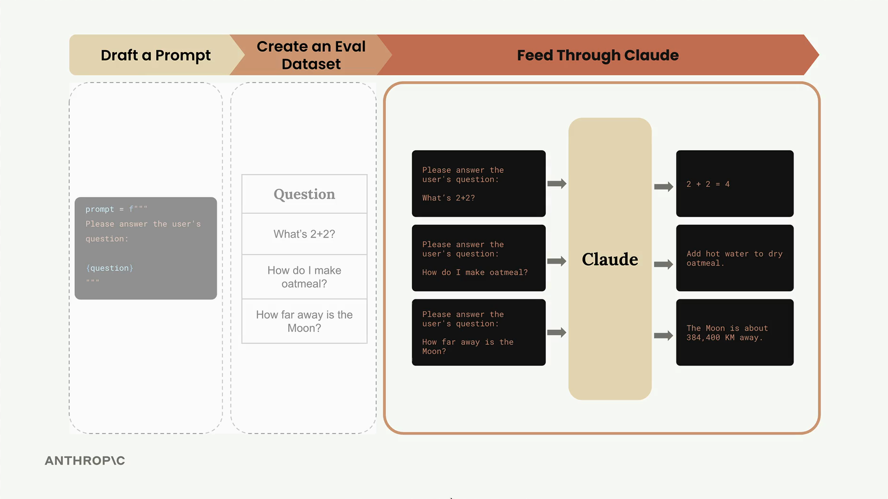
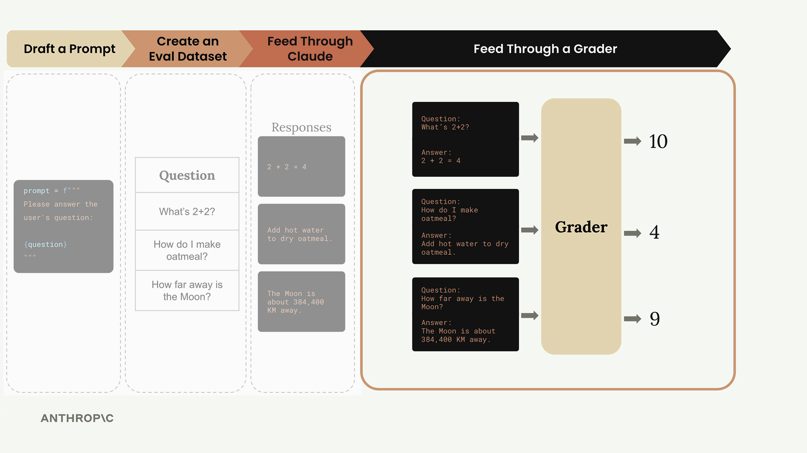

Запуск оценки
Чему научитесь
Видео 6:42 и текст урока
К концу урока вы сможете:
- собрать конвейер оценки из трёх функций:
run_prompt,run_test_case,run_eval; - прогнать датасет и получить структурированные результаты;
- понять, какой части конвейера ещё не хватает.
Видео и текст урока.
Смотреть урок на Skilljar Running the eval · 6:42Датасет для оценки готов — пора строить основу конвейера оценки. Для этого берём каждый тестовый случай, объединяем его с промптом, отправляем Claude, а затем оцениваем результат.

Процесс оценки устроен понятно: берём датасет тестовых случаев, соединяем каждый с шаблоном промпта, отправляем Claude на обработку, а затем оцениваем результат грейдером.
Основные функции
Конвейер оценки состоит из трёх основных функций, у каждой своя задача. Начнём с самой простой — функции, которая обрабатывает отдельный промпт.
Функция run_prompt
Эта функция берёт тестовый случай и подставляет его в шаблон промпта:
def run_prompt(test_case):
"""Merges the prompt and test case input, then returns the result"""
prompt = f"""
Please solve the following task:
{test_case["task"]}
"""
messages = []
add_user_message(messages, prompt)
output = chat(messages)
return output
Пока промпт предельно простой. В нём нет никаких указаний по формату, поэтому Claude, скорее всего, ответит многословнее, чем нужно. Мы доработаем это позже, когда будем дорабатывать промпт.
Функция run_test_case
Эта функция управляет прогоном одного тестового случая и оценкой результата:
def run_test_case(test_case):
"""Calls run_prompt, then grades the result"""
output = run_prompt(test_case)
# TODO - Grading
score = 10
return {
"output": output,
"test_case": test_case,
"score": score
}
Пока балл жёстко задан как 10. Логике оценки будут посвящены следующие уроки, а эта заглушка позволяет проверить конвейер целиком.
Функция run_eval
Эта функция координирует весь процесс оценки:
def run_eval(dataset):
"""Loads the dataset and calls run_test_case with each case"""
results = []
for test_case in dataset:
result = run_test_case(test_case)
results.append(result)
return results
Функция обрабатывает каждый тестовый случай из датасета и собирает все результаты в один список.
Запускаем оценку
Чтобы запустить конвейер, загружаем датасет и прогоняем его через наши функции:
with open("dataset.json", "r") as f:
dataset = json.load(f)
results = run_eval(dataset)
Первый запуск может занять время: даже с Claude Haiku обработка всего датасета может идти около 30 секунд. Способы ускорения разберём позже.
Смотрим на результаты
Оценка возвращает структурированный JSON-массив, где каждый объект — результат одного тестового случая:
print(json.dumps(results, indent=2))
В каждом результате три ключевых элемента:
output— полный ответ Claude;test_case— исходный тестовый случай;score— балл оценки (пока заданный вручную).
Как видно по выводу, Claude отвечает довольно многословно — мы ведь ещё не дали указаний по формату. Это именно та проблема, которую мы будем решать, дорабатывая промпт.

Что мы сделали
На этом этапе основа конвейера оценки готова: мы берём датасет, прогоняем его через Claude и собираем структурированные результаты. Главный недостающий элемент — система оценки: жёстко заданный балл 10 нужно заменить настоящей логикой.
Этот конвейер — основа большинства систем оценки ИИ. Хоть он и выглядит просто, вы только что построили бо́льшую часть того, что делает конвейер оценки. Сложность — в деталях: лучшие промпты, продуманная оценка и оптимизация производительности.
Дальше разберём ключевую тему — грейдеры, которые превратят жёстко заданные баллы в осмысленную оценку работы Claude.
Дальше
Следующий урок — типы грейдеров и первый настоящий грейдер на основе модели.
Оригинал урока: Running the eval.